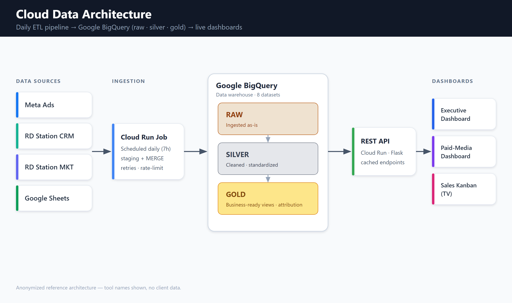

01 — Data EngineeringEngenharia de Dados
Cloud Data Architecture & Daily ETL PipelineArquitetura de Dados na Nuvem e Pipeline de ETL Diário
A layered BigQuery warehouse — raw → silver → gold, 8 datasets — and the pipeline that feeds it. A scheduled Cloud Run job ingests Meta Ads, CRM and marketing data every day, using a staging + MERGE pattern with retries and rate-limit handling. The gold layer serves governed views, including ad-spend → closed-deal attribution. Um data warehouse em camadas no BigQuery — raw → silver → gold, 8 datasets — e o pipeline que o alimenta. Um job agendado no Cloud Run ingere Meta Ads, CRM e marketing todos os dias, com padrão staging + MERGE, retries e tratamento de rate limit. A camada gold serve views governadas, incluindo atribuição de investimento → venda.
▶ Live demo▶ Ver demo ao vivo